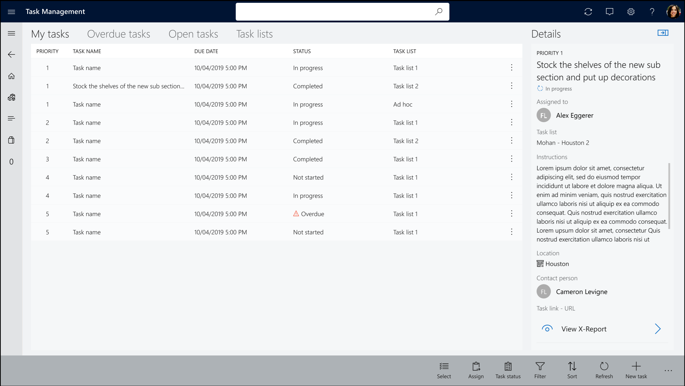
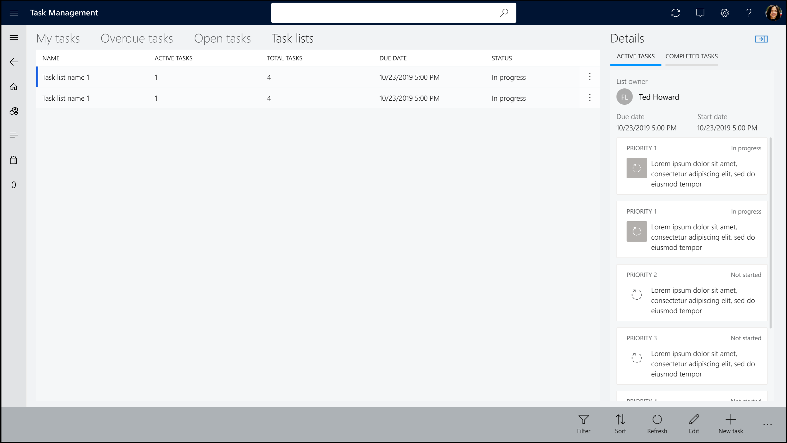

Aufgabenverwaltung in POS
Important
Dynamics 365 Retail ist jetzt Dynamics 365 Commerce und bietet umfassende Handelsfunktionen für alle Kanäle – von E-Commerce über Shops bis hin zu Callcentern. Weitere Informationen zu diesen Änderungen finden Sie unter Microsoft Dynamics 365 Commerce.
Dieses Thema beschreibt die Aufgabenverwaltung in der Microsoft Dynamics 365 Commerce-Point-of-Sale-Anwendung (POS).
Übersicht
Die POS-Anwendung Dynamics 365 Commerce verfügt über Aufgabenverwaltungsfunktionen, mit denen Filialleiter und Mitarbeiter Aufgaben verwalten und den Aufgabenstatus aktualisieren können. Die Mitarbeiter der Filiale können auf die Aufgaben zugreifen, indem sie entweder die Kachel Aufgaben auf der POS-Homepage oder die Aufgabenbenachrichtigungen auswählen. Standardmäßig werden Filialmitarbeiter zur Registerkarte Meine Aufgaben geführt, wo sie die ihnen zugewiesenen Aufgaben einsehen können. Sie können jedoch problemlos zu den Registern Überfällige Aufgaben, Öffnende Aufgaben und Aufgabenlisten wechseln.
Aufgabenvorgänge für Filialleiter
Filialleiter können die folgenden Aufgaben in der POS-Anwendung mit Hilfe der Schaltflächen in der Befehlsleiste ausführen:
- Zuweisen - ausgewählte Aufgaben einem Filialmitarbeiter zuweisen.
- Aufgabenstatus - Den Status ausgewählter Aufgaben ändern.
- Filter - Standardmäßig werden nur aktive Aufgaben angezeigt. Durch Anwendung von Filtern können Manager jedoch alle Aufgaben anzeigen, auch solche, die abgeschlossen oder abgebrochen wurden.
- Neue Aufgabe - Erstellen Sie eine Aufgabe unter einer bestehenden Aufgabenliste oder erstellen Sie eine Einzweck-Aufgabe.
Die Mitarbeiter der Filiale können die folgenden Aufgabenvorgänge in der POS-Anwendung mit Hilfe der Schaltflächen in der Befehlsleiste ausführen:
- Aufgabenstatus - Den Status ausgewählter Aufgaben ändern.
- Filter - Standardmäßig werden nur aktive Aufgaben angezeigt. Durch Anwendung von Filtern können die Mitarbeiter jedoch alle Aufgaben anzeigen, auch solche, die abgeschlossen oder abgebrochen wurden.
Die folgende Abbildung zeigt die Registerkarte Meine Aufgaben in der POS-Anwendung Handel.

Die folgende Abbildung zeigt die Registerkarte Aufgabenlisten.

Zusätzliche Ressourcen
Überblick über die Aufgabenverwaltung
Aufgabenverwaltung konfigurieren